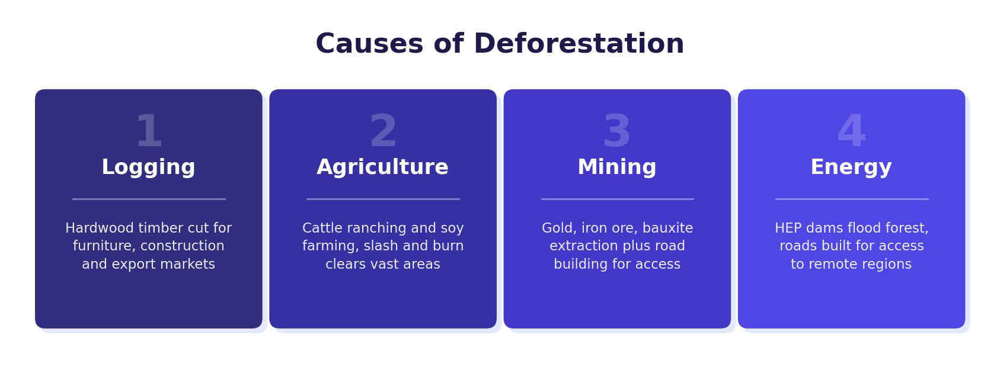

The Value of the Tropical Rainforest
Tropical rainforests are one of the most valuable biomes on Earth. Their importance operates at both a local scale (for people who live in and around the forest) and a global scale (for the entire planet).
Global Value
- Carbon sink — rainforests absorb about 20% of the world’s man-made carbon dioxide emissions. A carbon sink absorbs more carbon than it releases, making rainforests vital in tackling climate change.
- Oxygen production — rainforests produce about 20% of the world’s oxygen, earning the nickname “lungs of the world.”
- Biodiversity — tropical rainforests contain 50–90% of all the world’s species, despite covering only 6% of the land surface. An estimated 137 plant, animal and insect species are lost every day due to deforestation.
- Medicine — 25% of global medicines originate from rainforest plants. Less than 1% of tropical rainforest plants have been tested for medicinal value, so there is enormous untapped potential.
Local Value
- Indigenous tribes — around 1,000 indigenous tribes live in the TRF. They have used the forest for thousands of years for food, shelter and medicine through subsistence farming, hunting and gathering.
- Food sources — over 3,000 fruits are found in the rainforest. At least 80% of the developed world’s food originated in the TRF, including cocoa, sugar, bananas, cinnamon and vanilla.
- Soil protection — tree roots bind the soil together, preventing erosion. The canopy intercepts rainfall, reducing the impact on the ground.
- Water cycle — trees help maintain the water cycle by returning water vapour to the atmosphere through transpiration. In the Amazon, 50–80% of moisture remains in the ecosystem’s water cycle.
About 20 million people now live in the Amazon after moving there for economic opportunities. However, around 1,000 indigenous tribes have lived sustainably in the rainforest for thousands of years, relying on its resources without destroying it.

Causes of Deforestation in the Amazon
It is estimated that about half of the world’s tropical rainforest has been cleared. The Amazon Rainforest, found in Brazil (the fifth largest country in the world), contains the largest area of TRF. Deforestation has four main causes:
- Farming (agriculture) — the biggest cause, responsible for about 80% of deforestation in Brazil through cattle ranching. Commercial farming also clears land for plantations growing rubber, palm oil and cocoa for export. Commercial farming and subsistence farming both drive clearance.
- Logging — timber companies target valuable hardwoods like teak, rosewood and mahogany. Loggers often create the first roads into the forest. Smaller trees are used for fuel, pulp (for paper) or charcoal.
- Mineral extraction — minerals like bauxite (used to make aluminium) and gold are found beneath the TRF. In Brazil, the area used for gold mining has grown from 10,000 hectares in 1999 to over 50,000 hectares today.
- Energy development (HEP) — ideal river conditions in the Amazon have encouraged the building of dams for hydroelectric power. Although HEP is renewable, dam construction floods large areas of rainforest.
Impacts of Deforestation
Deforestation has severe consequences at both local and global scales:
- Climate change — fewer trees means less CO² is absorbed. Fire used to clear the forest releases even more CO², contributing to the greenhouse effect and global warming.
- Biodiversity loss — species lose their habitats and become endangered or extinct. An estimated 50,000 species are lost per year.
- Soil erosion — without tree roots to bind the soil and canopy to intercept rainfall, the thin topsoil is quickly washed away. Rapid leaching removes remaining nutrients.
- Flooding and drought — removing trees disrupts the water cycle. Flash floods become more likely as less water is absorbed by vegetation. Reduced transpiration can lead to less rainfall and drought.
- Indigenous displacement — traditional communities lose their land, resources and way of life.
Cattle ranching is by far the largest cause of deforestation in the Amazon, responsible for approximately 80% of forest clearance. The beef produced is a key export for Brazil.
Sustainable Management Strategies
Sustainable management means using resources in a way that meets today’s needs without compromising the ability of future generations to meet theirs. Several strategies aim to protect the rainforest while still allowing economic development:
Selective Logging
Selective logging involves only felling trees when they are fully grown or from selected species. Young trees are left to mature, protecting the ground from soil erosion. A strict quota limits how much timber can be cut, with a cycle lasting 30–40 years. However, selective logging can be difficult and time-consuming because of the challenge of accessing individual trees deep in the forest.
Replanting
Replanting involves collecting seeds from remaining patches of primary forest, growing them into saplings in nurseries, and planting them in deforested areas. Locally, it reduces the risk of flooding and soil erosion. Globally, growing trees absorb CO² from the atmosphere, helping to slow climate change. For example, Reforest Action has replanted 120,000 trees since 2019 on previously damaged land. However, replanting requires expensive maintenance and can limit land available for farming.
The International Tropical Timber Agreement (2006) restricts the trade in hardwoods taken from the TRF unless they have been sourced sustainably and replanted. 71 countries have signed the agreement, which is sponsored by the United Nations. Debt-for-nature swaps are another approach: richer nations or charities wipe portions of a poorer country’s debt in exchange for promises to protect the rainforest. For example, the USA funded a project to protect the Amazon and wiped off £13.5 million in debt owed by Brazil.
Conservation
Conservation schemes offer different levels of protection. The strictest conservation areas are off limits to everyone except authorised researchers. If managed sustainably, conservation areas prevent long-term damage to the ecosystem and protect endangered species. The Amazon Conservation Team (ACT) works with indigenous tribes to defend their land rights and develop agroforestry techniques. However, conservation can shut out people who desperately need land to farm.
Education
Education ensures that those involved in forest exploitation understand the consequences of their actions. The most valuable education trains farmers to make better use of already deforested land — for example, using charcoal as fertiliser keeps cleared plots fertile for longer, reducing pressure to clear more forest. The Coffee Sustainability Curriculum teaches growers computer skills and sustainable practices to improve farm management while preserving the environment.
Ecotourism
Ecotourism is small-scale, low-impact tourism that aims to educate visitors about nature and local cultures. Ecotourists travel in groups of no more than 20, stay in locally-owned accommodation, buy local produce and use local guides. The Cristalino Lodge in the Amazon uses solar energy, limits guest numbers per guide, and supports research that has documented over 1,356 plant species. According to the World Bank, sustainable tourism in the Amazon is valued at approximately US$2.3 billion annually.
There are six main strategies for sustainably managing the TRF: selective logging, replanting, international agreements, conservation, education and ecotourism. Each has strengths and limitations — in the exam, you need to be able to explain how at least two strategies work and evaluate their effectiveness.